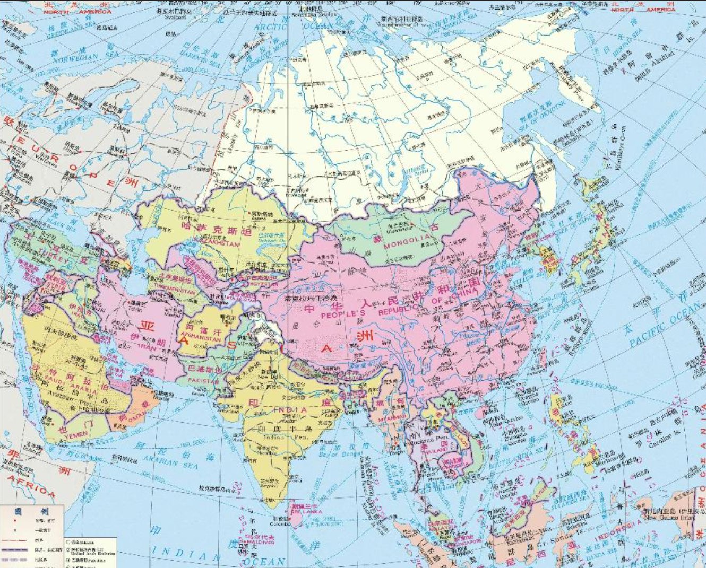
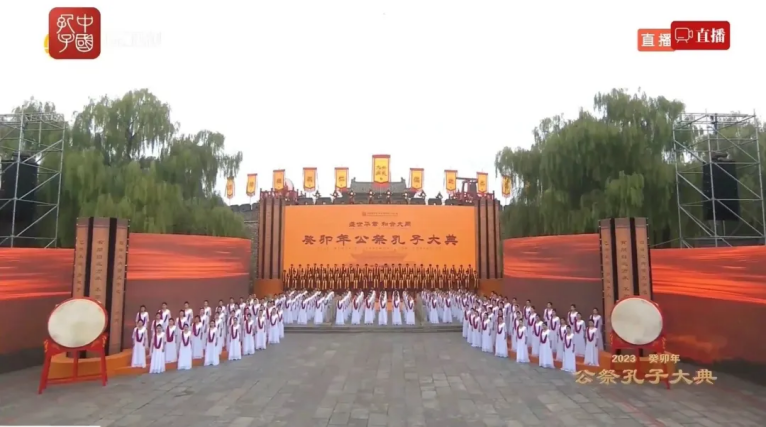
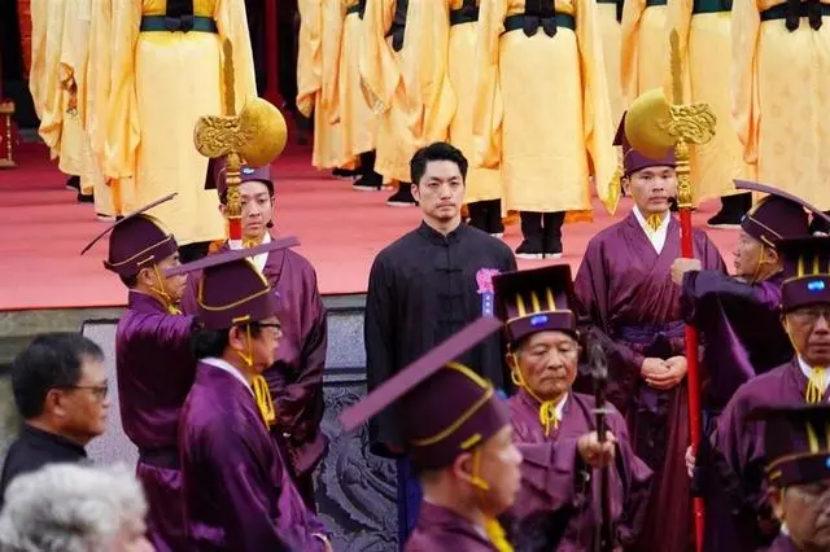
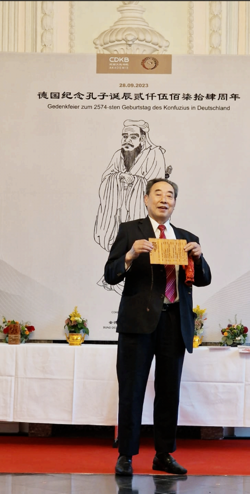
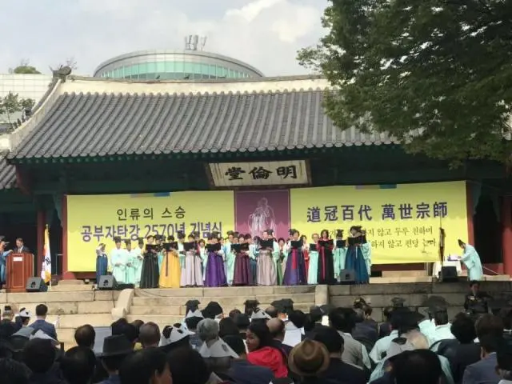

| 时间 | 历史事件 | 标志 |
|---|---|---|
| 鲁哀公（公元前478年） | 在曲阜阙里孔子的旧宅立庙，既今天的曲阜孔庙。孔子生前所住的三间房屋改成寿堂，将孔子生前使用的衣、冠、车、琴、书册等保存起来，并且按岁时祭祀。 | 诸侯祭孔的开始 |
| 汉高祖十二年(公元前195年) | 高祖刘邦经过鲁国，以太牢祭祀孔子。 | 天子祭孔的开始 |
| 汉元帝(公元前48－33年在位) | 征召孔子第13代孙孔霸为帝师，封关内侯，号褒成君，赐食邑八百户，以税收按时祭祀孔子。 | 封孔子子孙为侯，以奉祀孔子的开始 |
| 汉光武帝建武五年(公元29年) | 派遣大司空宋宏到曲阜阙里祭祀孔子 | 帝王派遣特使祭孔的开始 |
| 汉明帝永平二年(公元59年) | 于太学及郡县学祭祀周公、孔子。 | 朝廷及各地方政府也都在学校中祭孔，祭孔成为全国性的重要政教活动。 |
| 汉明帝永平十五年(公元72年) | 明帝赴曲阜，祭祀孔子及七十二弟子。 | 祭孔有配享的开始。 |

山东 全球“云祭孔”活动

台北 祭孔大典

德国 纪念孔子诞辰文化活动

韩国 孔子2570年诞辰纪念式和秋期释奠

日本 祭孔活动
自汉代以后，祭孔活动延续不断。规模也逐步提升，明清时期达到顶峰，被称为“国之大典”。满清入主中原， 顺治帝定都北京，他在京师国子监立文庙，内有大成殿，专门举行一年一度的祭孔大典，并尊孔子为“大成至圣文宣先师”。 祀礼规格又进化为上祀、奠帛、祝文、三献、行三拜九叩大礼。古代中国周边国家多崇尚儒学，日本、韩国、越南等亦有祭孔。 现代祭孔活动多样，日本、韩国、新加坡至今每年都会有大型祭孔仪式。